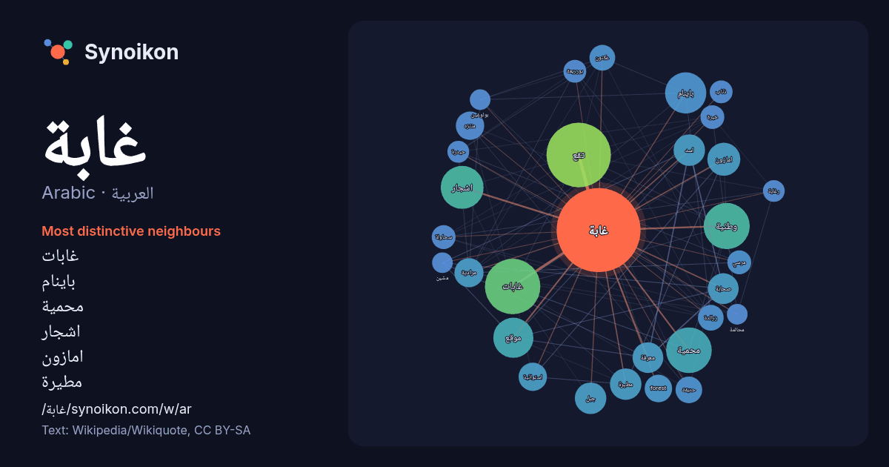

العربية · Arabic · word of the day list
غابة
“forest” · The words found around it in 823 instances from Arabic Wikipedia, Wikiquote.

Most distinctive neighbours
- غابات 47×
- باينام 37×
- محمية 36×
- اشجار 29×
- امازون 22×
- مطيرة 21×
- تقع 21×
- صحابة 19×
- مرادية 19×
- اسد 17×
- forest 17×
- منتزه 16×
- وطنية 16×
- استوائية 16×
- عكنون 15×
- زرالدة 15×
- سحاولة 13×
- خيرة 13×
- معرفة 12×
- بوزريعة 12×
× = how many times more often than in general Arabic Wikipedia text.
Most frequent neighbours
- تقع 88
- غابات 65
- وطنية 45
- محمية 44
- اشجار 39
- باينام 36
- موقع 34
- منطقة 33
- اكبر 25
- مدينة 25
- امازون 23
- شمال 22
- اسد 21
- جبل 21
- مطيرة 21
- صحابة 20
- معرفة 20
- قديمة 18
- مرادية 18
- استوائية 17
In context
- والنباتات المقاومة للجفاف والعطش. الغابات الاستوائية الغابات المطيرة غابة مستنقعات شجرة تولي غابة بدائية الجلح مقالة غابة في الموسوعة العربية أحمد شفيق الخطيب، Wikipedia snippets · غابة
- الكثيفة. غابة النصر في العاصمة الليبية طرابلس هي أكبر غابة في المدينة. غابة المعمورة المغربية، أكبر غابات الفلين في العالم. لغابات المطيرة هي الغابات التي Wikipedia snippets · غابة (توضيح)
- غابة بدائية؛ غابات بطيئة النمو - وتسمى أيضا الغابة الأولية أو الغابة الرئيسية أو الغابة العذراء - هي غابة بلغت سنًا كبيرة وعاشت عمراً كبيراً دون حدوث Wikipedia snippets · غابة بدائية
- غابة النصر في العاصمة الليبية طرابلس هي أكبر غابة في المدينة كما تجاورها حديقة الحيوانات بأبي سليم ويشقها مجرى وادي المجينين . اقتطعت من الغابة على فترات، Wikipedia snippets · غابة النصر
- غابة الأمازون أو الأمزون هي غابة استوائية مطيرة، يقع الجزء الأكبر منها في البرازيل في قارة أمريكا الجنوبية، يغطي هذا الحوض مساحة 7،000،000 كم²، منها 5،500،000 Wikipedia snippets · غابة الأمازون
- "غزلان في غابة الذئاب ··· واقع أم مغامرة ؟". صحيفة الاتحاد. Archived from the original on 2020-09-15. Retrieved 2020-09-15. ""غزلان في غابة الذئاب" ميلودراما Wikipedia snippets · غزلان في غابة الذئاب (مسلسل)
- الخليجية واليمنية والأردنية بجانب السورية، من أعمالها: (أشواك ناعمة، غزلان في غابة الذئاب، ليلة ورجال، الانتقام، أهل المدينة، محمود درويش، الطريق الوعر). دنيا Wikipedia snippets · لونا الحسن
- (الألب العليا): بلدة فرنسية. غاب: مذكر غابة. سهل الغاب: منخفض في سوريا. غاب (نبات): جنس من النباتات. غاب (شركة): سلسلة متاجر. غاب (موقع اجتماعي) ماضي فعل يغيب Wikipedia snippets · غاب (توضيح)
More Arabic words
- أغنية
- إله
- تاريخ
- جبل
- جرس
- جزيرة
- جسر
- حديقة
- حصان
- حقيقة
- حياة
- خبز
- خريطة
- خريف
- ذهب
- زمن
- ساعة
- شاي
- شتاء
- صحة
- صحراء
- صمت
- صيف
- طبيعة
- طريق
- طعام
- ظل
- عائلة
- عاصفة
- عسل
- علم
- عمل
- فن
- قطار
- قطة
- قلب
- قوة
- كلب
- لغة
- ماء
- مال
- مدينة
- مرآة
- مطر
- ملح
- مناخ
- موت
- نجم
- والدة
Precomputed on 2026-10-09 with default settings (±5 words, medium corpus). The interactive map can refresh it with live data.